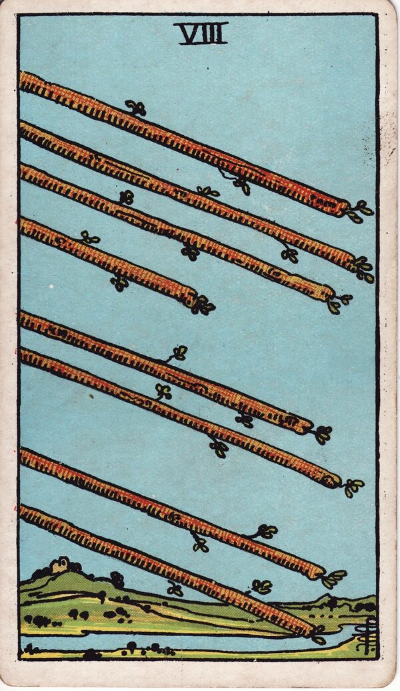

Minor Arcana · Suit of Wands
Eight of Wands Tarot Card Meaning
The Eight of Wands is everything moving at once - speed, momentum, and news on the way. Want to know what it means in your spread? Every reader on our line is hand-vetted - connect in under 60 seconds, $1 for your first minute, hang up anytime.
- Hand-vetted readers
- Available 24/7
- Hang up anytime

Eight of Wands - What It Shows
Eight wands fly through open air over green countryside, almost reaching the ground. There are no people - just movement. It's the only Wands pip with no figure, because the card is the motion. After the standstill of defending in the Seven, the Eight is release: everything that was held back is suddenly in flight.
Eight of Wands Upright Meaning
Upright, the Eight of Wands is speed, momentum, and swift developments. News arrives, messages land, plans accelerate, travel happens, things finally move. It often follows a frustrating wait and signals that the holding pattern is over - events are about to come quickly.
Eight of Wands Reversed Meaning
Reversed, the arrows hang in the air. Delays, frustration, missed messages, crossed wires, or momentum that fizzles. It can mean things are moving too fast to control, or not moving when you expected them to.
Eight of Wands in Love & Relationships
In love, the Eight of Wands is fast movement and contact - a message coming, a connection heating up quickly, a whirlwind phase, or news from someone you've been thinking about. Example: a caller waiting on silence from a love interest drew this card; the read was that contact or movement is imminent - the pause is about to break, often suddenly.
Eight of Wands in Career & Money
For work it's rapid progress - a fast yes, a project taking off, news of a decision, or a busy, accelerated period. Example: someone awaiting a job verdict pulled this card; the message was that an answer and momentum are coming quickly, so be ready to move rather than caught flat.
Eight of Wands as Advice
As advice: be ready to move fast. Send the message, take the opportunity now, and don't add friction to momentum that's finally flowing - but stay clear-headed in the rush.
What People Ask About the Eight of Wands
Common questions readers hear about this card:
"Does it mean someone will contact me?"
Very often - messages and news are central, frequently soon.
"Is it a travel card?"
It can be - flights, trips, and movement are classic readings.
"How soon is 'fast'?"
It implies days-to-weeks rather than months; surrounding cards refine it.
"Eight of Wands as feelings?"
Fast-developing, excited, 'falling quickly' energy.
Eight of Wands - Yes or No?
Upright: a fast yes. Reversed: "yes, but delayed," or held up by miscommunication.
Eight of Wands Reversed in Love & Career
Reversed, the fast card slows - and the area matters. In love, it's the message that doesn't come, a connection that was racing then suddenly stalls, crossed wires, or a whirlwind cooling abruptly. It can also mean things moving too fast to feel grounded. Often it's a frustrating silence after momentum, not necessarily a no. In career, reversed it's delayed news, a held-up decision, miscommunication derailing progress, or plans losing their momentum just as they were taking off. The reversed Eight's theme is interrupted flow. A live reader can tell you whether the hold-up is a brief snag or a real change of direction.
Eight of Wands Timing in a Reading
Timing is the least precise thing tarot does - but the Eight of Wands is the closest the deck has to a "fast" card. Readers most often place it within days, sometimes within a week: swift movement, quick news, rapid developments after a wait. It's a common "yes, and soon" answer for contact or results. Reversed, the speed stalls - delays and crossed wires push the timeline out. Even so, a live reader reads the surrounding cards and your question to sharpen it beyond the card alone.
Eight of Wands Card Combinations
Context changes everything - a few pairings readers see often:
Eight of Wands + Knight of Wands
Fast pursuit, travel, or a relationship moving very quickly.
Eight of Wands + Page of Wands
Exciting news or a message arriving soon.
Eight of Wands + The Tower
Sudden, rapid change that lands all at once.
Eight of Wands in a Tarot Reading
A meanings page is the map; a live reading is the territory. The Eight of Wands shifts with its position and the cards around it - which is what a hand-vetted reader interprets for your question. See the full Suit of Wands, all 56 cards on the Minor Arcana hub, or start a phone tarot reading.
← Seven of Wands · Next: Nine of Wands →
What Does the Eight of Wands Mean for You?
A meanings list is the map; a live reading is the territory. We'll connect you with the right hand-vetted tarot reader in under 60 seconds. $1/min first call · 15 minutes for $10 · hang up anytime · 100% satisfaction promise.
Call (888) 920-6662 NowEight of Wands - Frequently Asked Questions
What does the Eight of Wands mean?
Speed and momentum - fast movement, news, messages, and rapid progress.
What does it mean reversed?
Delays, frustration, miscommunication, or stalled momentum.
What does the Eight of Wands mean in love?
Fast movement - a message coming or a connection heating up quickly.
Is it a yes or no card?
Upright, a fast yes. Reversed leans "yes, but delayed."
How much does a reading cost?
First-time callers pay $1/min, or 15 minutes for $10, and you can hang up anytime.
Get Your Tarot Reading Now
Connected to a hand-vetted reader in under 60 seconds, the cards pulled on your real question, and you hang up with clarity.
Call (888) 920-6662